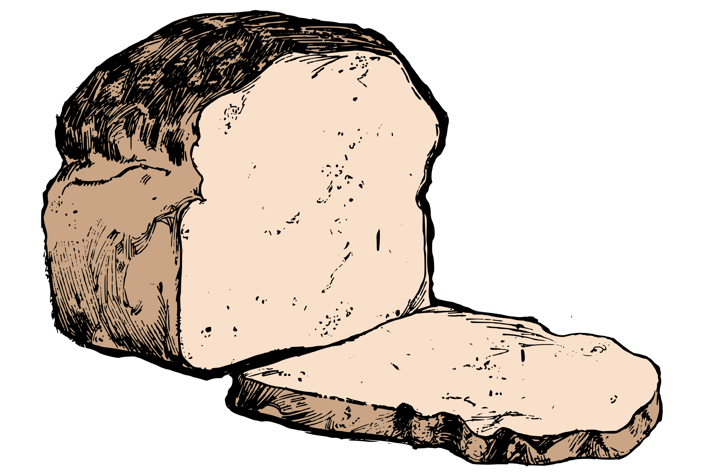
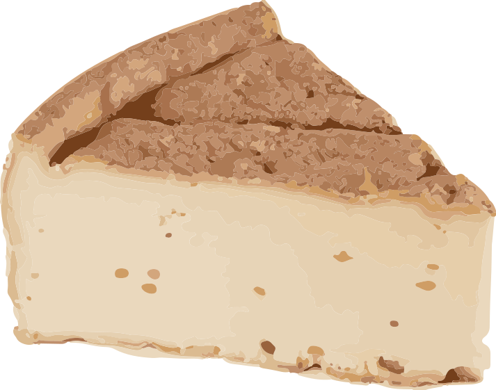
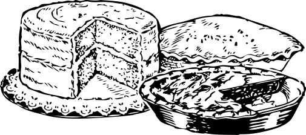
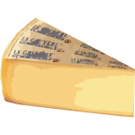
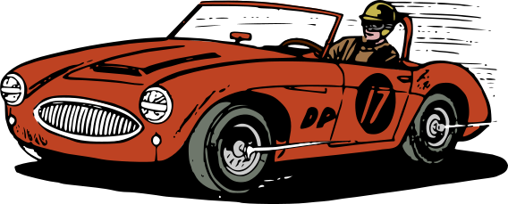

Pães artesanais
Fermentação natural, assados em forno a lenha todos os dias para o seu o café da manhã e seu lanchino do fim de tarde.
Encomendar
Panificadora artesanal há 12 anos
Fermentação natural, produtos coloniais, bolos e tábuas de frios. Garanta o seu café da manhã, lanchino da tarde, coffee break da empresa ou a sua encomenda para festinha pelo WhatsApp e retire sem fila e sem risco de ficar sem.
Encomendar pelo WhatsApp Ver cardápio
Escolha a categoria e abra o pedido com mensagem pronta.
Fermentação natural, assados em forno a lenha todos os dias para o seu o café da manhã e seu lanchino do fim de tarde.
Encomendar
Queijos e receitas coloniais de gerações , para a mesa do dia a dia ou de presente a alguém querido.
Encomendar
Para aniversários e encontros. Informe o sabor e a data e receba a confirmação por escrito.
Encomendar
Montadas sob encomenda para eventos e reuniões, todo o sabor que o seu grupo precisa.
EncomendarTodo pedido vai padronizado para Dona Clara, agilizando o processo e evitando erros.

Seu pedido já separado e no nome tudo com carinho para quando você chegar.
Reunião, treinamento ou evento na região? Montamos pães, frios, bolos e doces artesanais para a sua equipe. Conte quantas pessoas serão, o dia e o local, e fazemos o orçamento.
Pedir orçamentoO Empório da Dona Clara abriu há 12 anos pelas mãos de DonaClara Ramos e do marido, Seu Roberto. O que sempre nos distinguiu foi o pão de fermentação natural e o ambiente familiar do balcão, cheio na hora do café da manhã e no fim da tarde.
Os hábitos do bairro mudaram, e a gente mudou junto. Agora você escolhe onde e quando quer o seu pedido, com o mesmo cuidado e carinho de sempre.